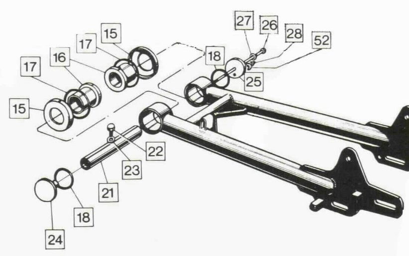

The MK3 swingarm bushing lubrication system is much improved over the Pre-MK3 lubrication system.
The Pre-MK3 lubrication is via an oil nipple fitting (28) on one of the end caps (24 & 25). The lubrication is kept from
leaking out by two O-Rings (17 & 18) held in place by a thin bolt (26) that also holds the end caps in place.

The MK3 lubrication is a one time lubrication system that in theory permanently lubricates the bushings.
Each bushing has two felt wicks (3 & 12) that are soaked in oil and sealed by a welch plug (5)
on one end and an oil seal (4) on the other end.

All that has to be done to upgrade a Pre-Mk3 swingarm is to bore out the ends to match the MK3 ends.

The MK3 bore diameter is 1.261" and .3" deep. Old Britts will provide this service (part number 38-600206) for
$125.00
as of
02/12/21;
when purchasing our electric starter conversion kit. It takes us about one hour to setup the jig to hold the swingarm and
about 1/2 hour for each end. The actual milling only takes a few minutes, but the setup is extensive.
You will also need to purchase the upgrade kit (13-100005) that includes all the required parts listed above.
Since the MK3 bushings are shorter than the Pre-MK3 bushings, the MK3 swingarm spindle is required and included in the upgrade kit.
This page was written and designed by F. H. Eaton
& Associates if you have any questions or comments please
contact us at info@fheaton.com